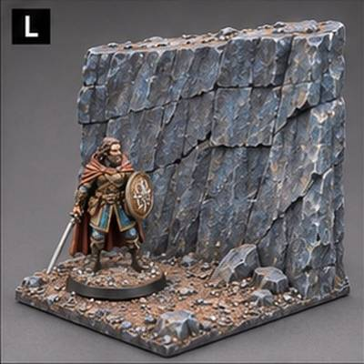
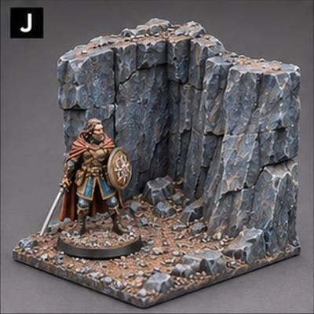
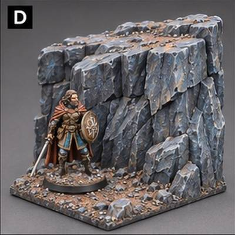
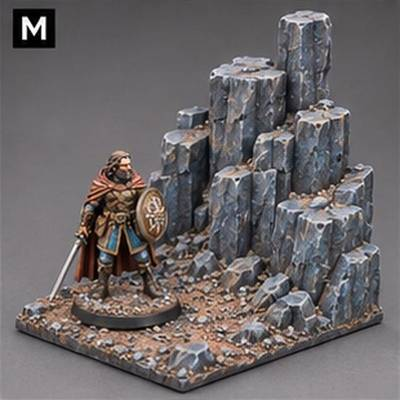
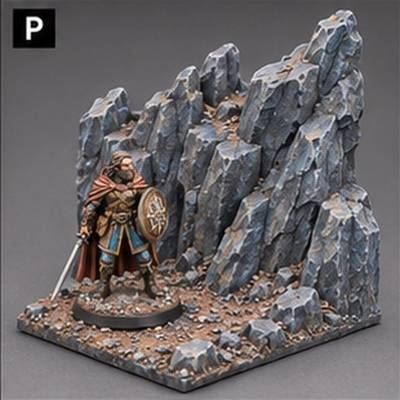
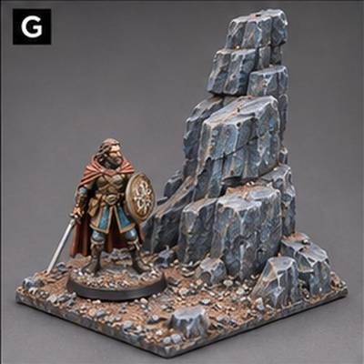
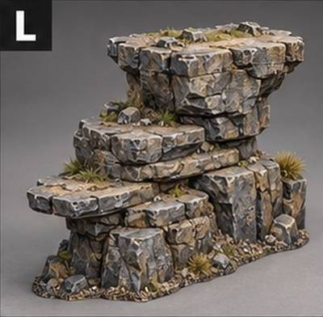
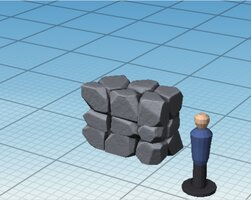

Cliff language proposal
Cliff Cleaving
Every one of the 15 reference walls is one volume of rock cut by a few families of flat planes. Today's cliff words build a wall out of rows of stones. This page proposes one new node, cleave, that cuts the region with a family of planes, and retires about thirty words it replaces.
Printing is a short note at the end. The test here is how close the look gets, and whether the same few words would fit a sixteenth photo.
What the references are made of
Each picture, in five plain words: massing (the shape of the whole), face, joints, crest, surface. They fall into three families.
Slab walls
Large flat faces cut by a few joints. Massing is one plane (or two). The crest is level or lightly broken. D differs: its joints are oblique.

L Tall flat wall- massing
- one slab wall, a back plane
- face
- big flat slabs, thin cracks
- joints
- 3 or 4 irregular rows, few verticals
- crest
- level, a little broken
- surface
- planar, small chips

J Corner- massing
- two walls meeting
- face
- wide flat slabs
- joints
- rows and wide verticals
- crest
- level
- surface
- planar

D Cap over facets- massing
- wide mass, three sides
- face
- big oblique facets
- joints
- diagonal, crossing
- crest
- heavy cap hangs out
- surface
- planar, sharp edges
 F Sheer strips
F Sheer strips- massing
- one tall plane, almost no depth
- face
- narrow vertical strips
- joints
- vertical, continuous
- crest
- uniform
- surface
- planar, fine cracks
Columns
Steep joints dominate and run up the whole height. Each column ends where it likes, so the skyline is the picture. P and C lean or stack.
 B Ragged columns
B Ragged columns- massing
- tall narrow columns
- face
- vertical slivers
- joints
- vertical, straight up
- crest
- ragged, rising to one side
- surface
- planar

M Skyline- massing
- columns of different heights, loose blocks in front
- face
- square blocks
- joints
- vertical, some rows
- crest
- each column its own top
- surface
- planar

P Leaning spires- massing
- several tall columns leaning together
- face
- long tapering faces
- joints
- steep and parallel
- crest
- sloping, each its own
- surface
- planar
 C Tower
C Tower- massing
- one narrow stack of small blocks
- face
- small blocks
- joints
- rows and short verticals
- crest
- ragged
- surface
- planar
Strata and ledges
Thin or thick horizontal courses. Each course sits at its own depth, so the front steps, hangs or terraces. N is the same strata made long and free-standing.
 E Terraces
E Terraces- massing
- 4 or 5 ledges stepping back and up
- face
- thin slab fronts
- joints
- thin strata, few verticals
- crest
- rises stepwise
- surface
- flat tops, sharp lips

G Ramp- massing
- rows tilt, tall rear to low front
- face
- big blocks
- joints
- tilted rows
- crest
- falls on a diagonal
- surface
- planar
 O Chunky blocks
O Chunky blocks- massing
- blocks at stepped depths
- face
- big flat faces
- joints
- rows and verticals
- crest
- stepped
- surface
- planar, sharp cracks, flat tops
 A Low massif
A Low massif- massing
- short, wide
- face
- wide flat blocks
- joints
- few rows
- crest
- flat plateau
- surface
- planar
 N Free-standing wall
N Free-standing wall- massing
- a long wall of tall blocks, several squares
- face
- rectangular faces
- joints
- running bond, vertical joints
- crest
- flat, with small caps
- surface
- planar, moss

Lf Ledges- massing
- thick strata, each hangs over the one below
- face
- horizontal strata
- joints
- long horizontal, few verticals
- crest
- stepped, big overhangs
- surface
- rough, moss
 K Bay and lip
K Bay and lip- massing
- a deep bay in the middle under a lip
- face
- flat slabs, larger at right
- joints
- rows and verticals
- crest
- lip over the bay
- surface
- planar
Debris at the foot (A, N, Lf and most of the others) is out of scope: the ground belongs to other elements.
Five ideas that explain all fifteen
Dots in the table show which ideas each picture needs. Idea 1 is in every one.
| Joint sets | Depth per cell | Tops are planes | Hewn faces | Lean and convergence |
|---|
| L | | | | | |
|---|
| J | | | | | |
|---|
| D | | | | | |
|---|
| F | | | | | |
|---|
| B | | | | | |
|---|
| M | | | | | |
|---|
| P | | | | | |
|---|
| C | | | | | |
|---|
| E | | | | | |
|---|
| G | | | | | |
|---|
| O | | | | | |
|---|
| A | | | | | |
|---|
| N | | | | | |
|---|
| Lf | | | | | |
|---|
| K | | | | | |
|---|
1. Joint sets
A wall is a volume cut by families of near-parallel planes. A block is a cell between them. Horizontal planes give courses. Vertical planes give columns. A set tilted at 60 degrees gives the big slanted facets of D. A set's planes may run through the whole wall or stop at the next plane of another set; that one choice separates a grid, a running bond and loose fieldstone.
2. Depth per cell
Each cell sits a step in front of or behind its neighbour along the set. Courses that each step back are terraces (E). Courses that step forward are a ledge or a cap (Lf, D, K). Neighbouring columns at different depths are the stepped front of O and the loose blocks of M.
3. The crest is a height per cell
The top of the wall is a height function of position, sampled once per cell. Cells are discrete, so the crest is made of flat block tops: a skyline (M, B), steps (E), a diagonal ramp (G), a flat plateau (A, N). No separate crest machinery.
4. Hewn faces
The references show flat faces, square edges and many small flat chips, where today's rock rounds every stone. The O generator tried cutting each block with many fine planes and always got rounded corners back. What worked was a separate surface step: keep the face's boundary flat so the block edges stay square, and break only the inside of the face into small flat facets. This is a finish on every free face, not a cut, so it is not part of cleave.
5. Lean and convergence
A set's dip can wobble up the wall, and its planes can lean toward a point. That makes the leaning spires of P and the tilted rows of G without a word for either.
The footprint stays as it is. A corner (J), a free-standing wall (N), a tower (C) and a bay (K) are regions and a top, which the language already has.
The proposed words
A cliff takes cleave children: zero, one or many, in any order (a set of cuts, not a sequence). With none, the cliff is one flat-faced block filling its region.
| Word | Meaning | Status |
|---|
cleave | A family of near-parallel cut planes. A new kind, Cut, so it can be named with let and passed as a param like a thing or a layer. | new |
dip | Angle of the planes from horizontal: 0 is bedding, 90 is vertical. A range wobbles from foot to crest. | new row rock already uses it |
facing | Direction the planes face in plan, as an angle measured from the outward normal of the nearest free face. Angle only. | new row rock already uses it |
toward | A point the planes lean toward. Replaces facing for converging sets. | new |
spacing | Pitch between neighbouring planes, along their normal. Takes the same forms as top: a range, a weighted range, an expression. | new |
bend | How far the planes of a set bend and drift. | new |
carry | How far a plane of this set runs: 1 through the whole region, 0 only to the next plane of any other set. | new row rock already uses it |
setback | The step of each cell from the one before it along the set (up for bedding, along the wall for a cross set). Positive steps back, negative steps out. A range, so the walk is random. | new row rock already uses it |
hew | A rock finish stage for every free face: scatter jittered points over the face, keep its boundary flat, push the inside points a little along the face normal, join them into flat facets. Settings: spacing (distance between points, about 4.4dmm, the same pitch meaning as on a cleave) and the new push (how far a point moves along the normal, about 0.95dmm). Strength 0 changes nothing. It pins boundaries where wear rounds them, and runs before wear. | new |
top, joints, bumpSize | Kept, each with its own meaning. bumpSize may be written on a cleave or on a weighted range, so setback and bend get a correlation length. | kept |
width height bond shift wander rise span regularity lean tilt wave width skew, height skew, planes.* | The row model. Spacing, dip, bend and carry hold each of them. Exact half-offset brick bond is lost: a carry below 1 is a chance, not an offset. | retired |
recess lip sbw.* band.* | Setback, per cleave. A lip on one course is a negative step on that course. | retired |
crest.bumps crest.w | A weighted range on top. | retired |
free.* depth tiles wall | The region says them: a free face is any face that is not a seam, thickness is the region's own within, run and wall are its at=. Choosing which free faces get relief is lost until the region can say it. | retired |
outl.* | Stay until phase 3, when the stone's own outline is a cleave on rock. | kept for now |
Count: ten words enter the registry (four already live in the rock's explorer panel), about thirty leave the cliff. Rock's cuts and chunks panels fold into cleave in phase 3, for the shape of the stone only. Texture is hew.
cliff at=crag top="[48dmm..60dmm]" {
cleave dip=0deg spacing="[11dmm..15dmm]" carry=0.35
setback="[0dmm..6dmm]"
cleave dip=90deg facing=0deg spacing="[10dmm..14dmm]" carry=0.35
rock { hew spacing=4.4dmm push=0.95dmm chips=2 }
}
That is the O generator's recipe in four lines: level courses with a depth push per block, joints that repeat the one below about a third of the time, hewn faces and one or two edge bites.
Four references in the proposed words
The schematics show what the sets cut. They are drawings of the idea, not renders: the engine is not touched on this page.
M. Skyline of columns
reference
 best today
what the sets cut (schematic, not a render)
best today
what the sets cut (schematic, not a render)
cliff at=crag top="[34dmm..62dmm]" bumpSize=14dmm {
cleave dip=90deg facing=0deg
spacing="[10dmm..14dmm]" carry=1
cleave dip=0deg spacing="[10dmm..16dmm]"
carry=0 wander=0.4 setback="[-3dmm..3dmm]"
}
Vertical joints run the full height (carry 1), so columns are separate. The bedding set is independent per column (carry 0), so each column has its own rows and its own top. Setback steps each block in or out from its neighbour along the wall, so some stand in front.
E. Terraces
reference

best today
what the sets cut (schematic, not a render)
cliff at=crag top="$edge + 8dmm + 24dmm * $y / 35" {
cleave dip=2deg facing=0deg
spacing="[6.5dmm..10dmm]" carry=1
setback="[4dmm..7dmm]"
cleave dip=90deg facing=0deg
spacing="[12dmm..22dmm]" carry=0.3
}
Thin strata, each standing back from the one below: that is the whole terrace. The crest rises with depth into the wall, and each block ends on a bedding plane, so it rises in steps.
P. Leaning spires
reference
 best today
what the sets cut (schematic, not a render)
best today
what the sets cut (schematic, not a render)
cliff at=spires top="[56dmm..68dmm]" {
cleave dip="[72deg..80deg]" toward="0.5,0.5"
spacing="[4dmm..7dmm]" carry=1
cleave dip=0deg spacing="[10dmm..14dmm]" carry=0
}
A steep set whose planes lean toward a point, so every column leans in toward the middle. The region is three summits, as today. The word toward names a point; facing stays an angle.
D. Oblique facets and a cap
reference
 best today
what the sets cut (schematic, not a render)
best today
what the sets cut (schematic, not a render)
cliff at=crag top="[44dmm..56dmm]" {
cleave dip=0deg spacing="[12dmm..18dmm]" carry=0.9
setback="[-4dmm..-2.5dmm]"
cleave dip=60deg facing=30deg
spacing="[8dmm..15dmm]" carry=0.5
cleave dip=90deg facing=0deg
spacing="[8dmm..15dmm]"
}
A third set at 60 degrees makes the big slanted facets that no row-and-column wall can. The bedding set steps each course forward (negative setback), so the top course hangs out as the cap.
What stays out of reach
- Moss, painted wear and the grain of the stone surface: finish words, not massing.
- Exact brick bond in N: carry is a chance.
- Choosing which free face gets relief and which stays plain.
- The return face (a side face seen at an angle), chipped vertical edges and darkening in the crevices were also missing from the generator. A return face is the region's job. Hew keeps edges flat on purpose, so chipped edges need another step. Crevice darkening is paint, not shape. All three are open.
Language check
Words
hew is one job, "facets each free face flat, edges kept square", and differs from pockets (round dishes), chips (bites at edges) and grain (fine roughness). cleave is new and does one job: a family of planes. dip, facing, carry, setback are the rock's page words promoted to registry rows, each with one meaning that rock's chunks panel then shares. toward, spacing, bend are new, each for a thing no word names. bond is retired in favour of carry: one meaning, one word. wander is retired rather than reused, so no old document changes meaning silently. spacing (pitch) and joints (groove width) stay apart.
Kinds
A new kind, Cut, with units::fits rules and a row in the closure test, so a cleave can be named, passed, overridden and imported like a thing or a layer. A cliff accepts any number of them.
Kernel
A cliff reduces to: a region, a crest height, and a set of plane families. The old rows, bond, recess, lip, band, lean, tilt and crest bumps are all special cases of one family's spacing, dip, carry and setback.
Second paths
One way to say each: no word has two spellings. The crest has one source, top; steps come from cell sampling and need no bedding set, so top means the same with any siblings.
Holes
Closed: Cut gets every verb. hew follows the rock stage rules: strength zero is identity, with a closure cell and a torture tile. hew and wear both touch edges, so the order is fixed: hew pins, then wear rounds. Open: no way yet to say which free faces get relief; the interim outl.* words are a second path to the stone's outline until phase 3 removes them.
Orin's ruling
Approve with changes. The kernel is sound: one node that cuts a volume replaces about thirty hand-tuned words. Six defects, and what changed in this page:
facing had two meanings and a keyword. Now an angle only, measured from the nearest free face's outward normal; front is gone. A point is the new word toward.setback had two semantics. Now one: the step from the previous cell along the set, with the order and the sign stated.bond and carry were two words for one meaning. bond is retired. carry now says what it runs through: the planes of the other sets. The loss of exact brick bond is stated.wander reused a retired word for a new job. New word bend. Irregularity of spacing is the width of the spacing range. bumpSize is allowed on a cleave and on a weighted range.cleave was a second-class node. New kind Cut, so it can be named and passed. Order carries no meaning; zero cleaves is one flat block.top changed meaning with its siblings. Steps now come from sampling per cell, so top means the same in every cliff. spacing takes the same forms as top, so width and height skew are not lost.
Second ruling, on hew: approve with changes. hew is one job and not pockets or chips renamed (those remove volume; it facets a face), and it cannot be a mode of cleave. Changed: it no longer borrows the rock's size and depth, which the registry gives other meanings (a rock's width; the look of gaps). It uses spacing and a new push. The hew and wear order is now stated, and a closure cell and torture tile are called for.
Also taken: the word count is ten new rows, not one; outl.* stays until phase 3; tiles, wall, free.* and depth are accounted for above; the interim losses are listed.
What the O generator learned
A from-scratch generator for reference O, with no controls, built convex blocks from lists of planes and tried to match the picture. It bears on the proposal like this.
- Idea 4 changed. Cutting finer planes into a block rounds its corners every time. Tilts above about 0.3 or more than three big chips bring the pillows back. Hewing the face (flat boundary, jittered facets inside) is what made the faces read as rock. It is now its own word,
hew.
- Massing carries more than texture. Level courses of 11 to 15dmm, a depth push per block of 0 to 6dmm and dark joints already read as O. Idea 2 holds, and
joints matters.
- Boxes at stepped height and depth were a lever of their own. That is a region with a
top that varies per cell, as proposed.
- About a third of vertical joints repeat the joint below. That is
carry near 0.35, a number to estimate from a picture.
- Weakest: a small cleave tilt and one to three edge bites. Small cap blocks on the top course helped break the skyline: a
spacing that shrinks near the top.
- A convex block is a list of planes, so a new reference needs only different plane distributions. That is the case for
cleave as the one cutting word.
Recommended order
Ranked by what moved the look in the O generator, then by pictures reached.
hew on every free face. The biggest single lever, and every picture has hewn rock. It needs no change to the wall model.- A depth push per block on level courses.
cleave with dip=0, spacing and setback, plus joints dark. Reaches E, O, K, Lf, M.
- Mass boxes at stepped height and depth.
top sampled per cell. Reaches O, M, B, A, N.
- Through-running vertical joints. A cross
cleave with carry near 0.35. Reaches L, J, F, B, N.
- Cap blocks on the top course (a smaller
spacing near the top) and one to three edge bites.
- Oblique set, then
toward with a dip range. D, then P and G. These need joint sets that the generator did not need for O.
- The
Cut kind and the rock's fold-in, retiring outl.*.
Printing risks
Not a requirement on the words, and not checked here. Two to watch: a negative setback is a cantilever, and a dip above 55 degrees leaning outward is an overhang. A cell may need a floor or a limit on how far it hangs.